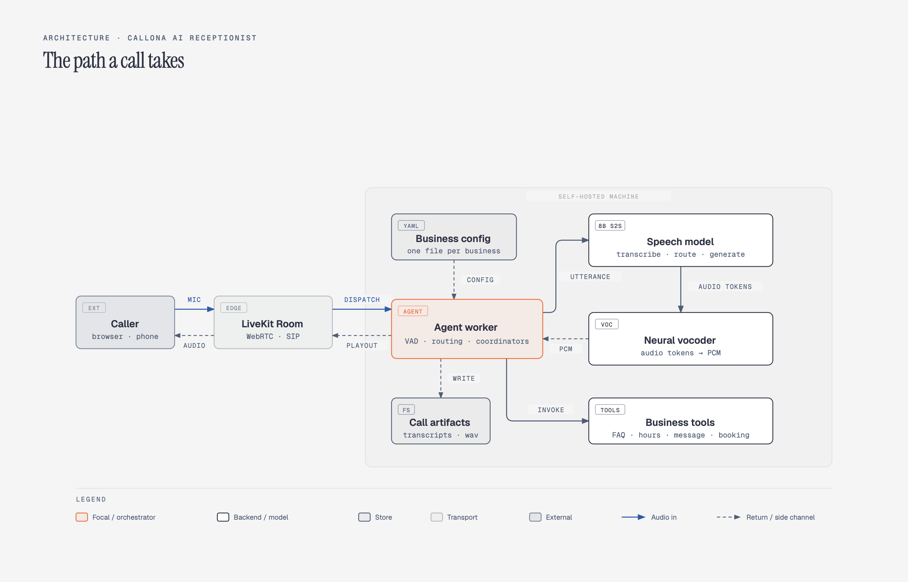
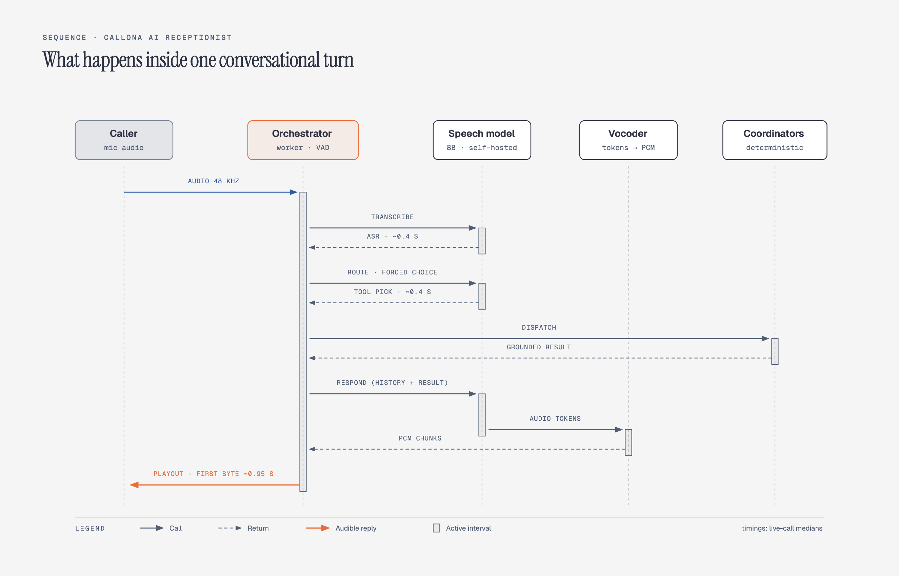
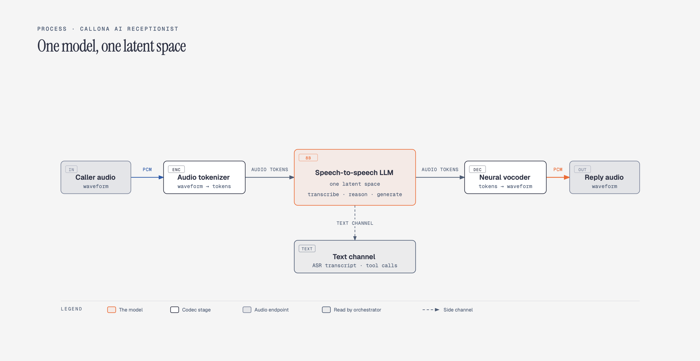
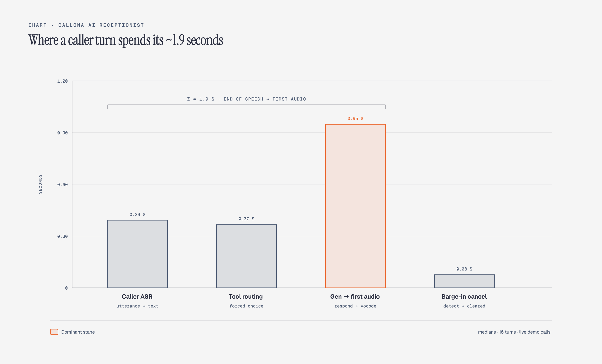
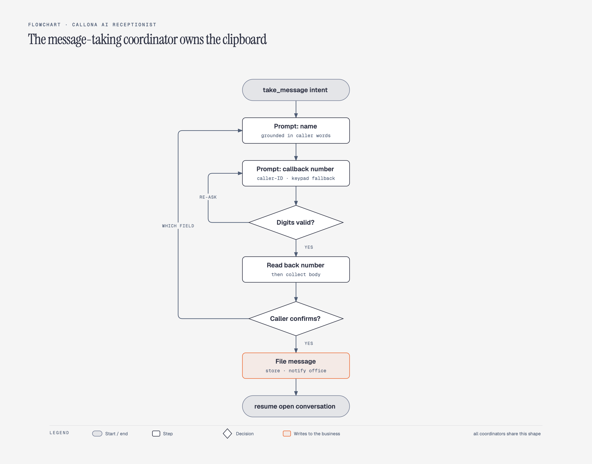
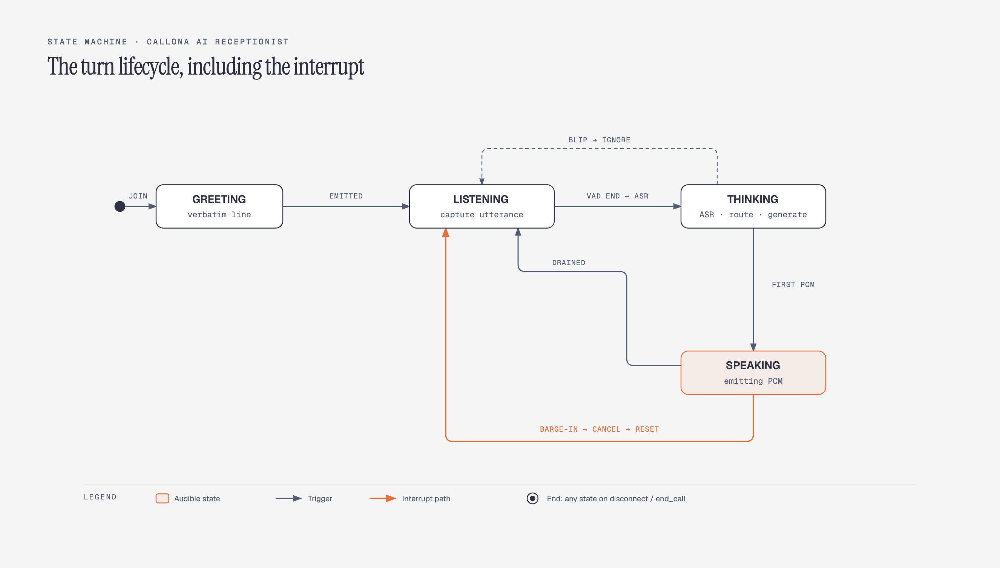

A small-business phone line is a strange workload for modern AI. The conversations are short, repetitive, and mostly scripted such as opening hours, directions, insurance, a message for the office, maybe an appointment. Any frontier model handles the content of those calls without effort but are expensive. The hard part is everything around the content. The caller expects an answer inside about a second, interrupts mid-sentence, spells an email address out loud, reads a phone number as words, and hangs up without warning. And the business would rather not stream every caller through a paid API that bills by the minute and holds the audio.
The hosted path exists and it works. A realtime speech API plus LiveKit's agent framework gets an AI receptionist running in a weekend, and I know, because the first version of this system was exactly that. The question that remained, and the question FTU Solutions has to answer before putting a real phone number on the thing, is whether a self-hosted speech-to-speech model can carry the same workload at the same pace or not. Not whether it can produce a good reply once. But, whether it can hold a real conversation, at phone-call speed, with barge-in, tool calls, bookings, and hang-ups, reliably enough that nobody on the other end can tell the difference.
The system built to answer that question is Callona. The model is an 8B-parameter speech-to-speech model with tool calling built-in, caller audio goes in, response audio comes out. Around it sits a transport layer (LiveKit), an agent worker written in Python, an inference server for the model, and a neural vocoder that converts the model's discrete audio tokens back into waveform. All of it self-hosted on one machine.
The short answer, after building it and running live calls through it: the model carries the workload, but only because the system stopped asking it to do the things an 8B model does badly. The model has three jobs: transcribe the caller, pick the right tool, and speak. Everything fragile, the multi-step flows, the confirmations, the arithmetic, the argument validation, is deterministic code sitting next to it. Where to draw that boundary, and what evidence pushed it where it ended up, is what this report is about.
A Callona call begins in a LiveKit room. For the web service, a FastAPI service mints a short-lived join token and a fresh room; the same code path works for a phone call arriving over a SIP trunk, where the caller is just a different kind of participant in the same room. LiveKit dispatches the room to an agent worker, which joins, publishes its own audio track, subscribes to the caller's audio, and runs the conversation loop.

Inside the worker, one turn looks like this: a voice-activity detector segments the caller's audio into utterances; each finished utterance goes to the model's built-in transcription; the transcript is routed, either to a deterministic coordinator that owns a structured flow, or to a small routing pass that picks a tool; the model then generates a spoken reply as a stream of audio tokens; the vocoder converts those tokens to PCM in chunks; and a buffered audio source plays them into the room.

Two things are deliberately not in this picture. First, there is no cascaded STT-LLM-TTS pipeline: transcription, reasoning, and synthesis all happen inside the one model, which was the challenge and which is what makes the latency budget survivable at all. Second, the model never sees most of the system's tools. The routing pass exposes a short list of read tools plus an escape hatch; the write tools (take a message, submit an intake, book the slot, send the email) are dispatched by deterministic coordinators, not chosen by the model. That asymmetry turns out to matter, and it is the subject of the routing section below.
Everything business-specific lives in a file per business: the persona and greeting, weekly hours, FAQs, transfer destinations, intake questions, info packets, calendar settings.
It is worth one section on how the model actually looks like, because the architecture is the reason the whole design works and is faster.
A conventional voice agent is three models bolted together: a speech-to-text model transcribes the caller, a text LLM reasons about the transcript, and a text-to-speech model reads the reply aloud. Each stage is a separate model call, a separate failure surface, and a separate latency contribution, and the text in the middle throws away everything the caller's voice carried that was not words: pace, hesitation, emphasis.
This system instead runs this end-to-end speech with one model. The caller's waveform is converted to audio tokens on the way in, then a single transformer backbone does all of the work in one latent space: it produces the ASR transcript, reasons over what the caller meant, decides whether a tool applies, plans the reply text, and generates the reply as a stream of output audio tokens. A compact neural vocoder converts each chunk of those tokens into waveform. There is no text bottleneck in the middle of the loop, the model literally hears the caller, including the parts of speech that a transcript would drop.

Two consequences follow, one helpful and one that shapes the rest of this report. The helpful one is latency and fidelity that is, one model call per turn instead of three serialized ones, with paralinguistic signal intact (the model's English ASR numbers are roughly 3.5% average word error rate, which is at the level where transcription stops being the bottleneck). The shaping one is that there is no stage to swap out. When a model of such size is bad at something, and the sections below are about what it is bad at, you cannot replace the weak stage with a stronger model. You have to route around it in code. That constraint is the source of most of the system's design.
Real-time is the whole product here, so it is worth putting numbers on it before anything else. These are measured values from live calls, logged per turn by the workers on calls, spoken turns, and caller utterances.
| Stage | Median | Observed range |
|---|---|---|
| Caller transcription (one utterance) | 0.39 s | 0.31 - 0.67 s |
| Routing pass (forced choice) | 0.37 s | 0.29 - 1.10 s |
| Generation to first audio byte | 0.95 s | 0.86 - 1.24 s |
| End of caller speech to first audible reply | ~1.9 s | ~1.7 - 2.1 s |
| Barge-in: detect, cancel, clear playback | <0.1 s | - |
| Session lease at call start (prewarmed) | 0.23 s | - |
Once generation starts, the vocoder keeps up comfortably: it produces waveform at about 0.6x real-time per turn, so audio never starves mid-sentence once playback begins, and a 250 ms jitter buffer smooths the chunk boundaries.

Less than two seconds from silence to reply is firmly inside what human turn-taking tolerates, and it is worth repeating what produces it: an 8B model small model, not a frontier API like GTP-live. The one deliberate cost is the routing pass, a serial extra round-trip of about four tenths of a second on a typical turn. A cascaded pipeline could speculate the route while transcribing; a speech-to-speech model cannot, because the route depends on the transcript. I accepted the extra round-trip because the alternative, trusting the model to call tools on its own, fails worse than four tenths of a second. The next section answers the why.
The single most reliable failure in the early system was invisible in production. With
tool_choice="auto", the model almost never called a tool. It did not refuse; it
narrated. Asked for opening hours, it would confidently say “let me check that for you” and then
keep talking. The tool sat unused while the model improvised an answer, sometimes correctly, sometimes not.
The fix was to stop asking the model to decide whether to call a tool and instead ask it which tool applies. A
separate routing pass runs per caller turn: same model, same system prompt, a narrowed tool list, and
tool_choice="required". Now the model must emit exactly one call, so the problem
collapses from “will it use a tool” (it won't) into “which of these labels
fits this utterance” (it will, and well). An escape hatch keeps it honest:
answer_directly is a real tool in the list, so a caller saying hello or asking the agent's
name does not get shoved into lookup_faq. In the logged calls, the router picked
answer_directly for pleasantries and open questions, lookup_faq for parking and
address questions, get_business_hours for schedule questions, and end_call for a
goodbye, and we have no logged case from production of it firing a tool the caller did not ask for.
Two smaller details mattered as much as the forced choice. First, greedy decoding: the router runs at temperature 0. With sampling on, roughly one request in forty produced malformed tool-call and the server rejected it; at temperature 0 the same battery ran forty-for-forty clean. Small models write small structure reliably only on the greedy path. Second, scope: the router's conversation is just the system prompt and a short routing hint, not the full call history. Less context means less anchoring, which connects to the compute-versus-generate split in a later section.
The general lesson, which I suspect applies well beyond this system: a small model is a decent classifier and a bad tool user. Converting tool selection into forced classification made it reliable; letting it also decide whether to act made it ornamental.
Front-desk calls have a handful of flows that are conversational on the surface and bureaucratic underneath. Take a message: collect the caller's name, a callback number, and the message body, confirm the number, and only then file it. For example, in case of a new patient intake: ask a fixed list of questions, read back each answer, accept corrections. Send an info packet: get an email address spelled out loud, read it back, wait for a yes. Book an appointment: offer real available slots, let the caller pick one, confirm, and then write the event.
Every one of these is a small state machine, and every one failed when the model owned the state. The failure modes were consistent: it would ask for a name and immediately invent one; it would treat “no, that's not correct” as a confirmation because it contains the word “correct”; it would book an appointment at a time it had made up rather than one the availability check had returned; it would accept an email address without the read-back that makes spelling errors recoverable. None of these are model bugs to be patched with a better prompt. They are what happens when a probabilistic text engine is asked to maintain ledger discipline across turns.
So the system took the ledger away. Each structured flow runs as a deterministic coordinator: plain code that tracks which fields are filled, decides what question comes next, and validates every candidate value before it is accepted. The model still talks; the coordinator decides what it is allowed to say and when the flow is done. Concretely, that looks like:
take_message call whose name or body does not overlap the
caller's recorded words gets rejected as ungrounded. The model is free to propose; only the transcript
can dispose.
The result is that the fragile parts of a call have the failure profile of ordinary software. They can be unit tested, they fail loudly, and they never invent a phone number.
The last boundary the data pushed sits between generating and computing. The model is a generator; it produces fluent, well-timed speech, and it will produce that speech whether or not the content underneath was ever verified. So the split is simple: the system computes, the model speaks. Three examples:
1. Business hours. “Are you open on Sundays?” is a lookup plus a tiny bit of date reasoning, and the model got it wrong often enough to matter. The answer is now computed deterministically from the file schedule and the business timezone, and the model is handed the sentence to speak. It speaks it well; it just was never going to derive it reliably.
2. Verbatim lines. Several moments in a call must come out exactly: the greeting, the read-back of an email address, the recitation of a callback number. Early versions passed these to the model with the full conversation history attached, and the model did what language models do: it anchored on the recent turns and paraphrased, once replaying an old refusal line in the middle of a read-back. The fix was to ask for verbatim speech with minimal context, system prompt plus the single instruction, no history. Deprived of anything to anchor on, it says the line.
3. Language hygiene. On a quiet line, the transcription pass occasionally emits stray non-English characters as ASR noise. Two defenses ended that: an explicit transcribe-in-English instruction on every utterance, and a scrub pass that drops non-Latin characters from transcripts before anything downstream sees them. Related housekeeping: utterances under 0.8 seconds that transcribe to nothing are treated as noise and ignored, which stopped the agent from politely answering sounds that were not speech.
One more boundary sits at the conversation level. Callers speak to the model in audio, but prior turns go back into context as assistant text only, capped at twenty turns. Re-feeding the whole audio history would bloat context and, worse, give the model more chances to anchor on its own earlier phrasing. Bounded, asymmetric history keeps each turn's context small and keeps the model talking to the caller rather than to its own transcript.
None of that design work matters if the call feels broken. Four pieces of unglamorous engineering do most of the work:
Warm it up once, lease it per call. The vocoder is a stateful neural model with the usual cold-start costs. At worker startup the system runs sixteen streaming warmup calls through it (about 34 seconds, once) and keeps the session in a process-level cache. Each call then leases the warm session in about 0.23 seconds instead of paying the cold-start tax on the greeting. The lease is exclusive per worker, so concurrency is a scale-out question: more workers, more calls at once.
Reset the vocoder between turns. The streaming vocoder keeps a cache across chunks so consecutive chunks blend. Early on, a barge-in mid-utterance would leave that cache half-populated, and the next turn crashed with a tensor shape mismatch. The fix is one line of discipline: reset the stream cache at the start of every turn; resetting only at call start leaves the crash surface open. Stateful streaming components and cancellation do not compose for free; somebody has to own the boundary, and it is never the streaming component.
Buffer before you play. Audio tokens arrive in chunks whose timing is governed by the model, not the speaker. The audio source prebuffers 250 ms before starting playback and holds a cushion after that, which is what keeps chunked generation from sounding chunked.
Let the caller win. VAD detecting speech while the agent is talking triggers barge-in: cancel the in-flight HTTP stream to the model server, clear the queued audio, drop the generation task. Measured end-to-end, the whole cancel path runs in well under a tenth of a second, and the next turn's cache reset (above) is what makes the interrupted state safe to resume from.

A smaller behavior worth noting: when a caller does stop talking mid-word and the VAD fires on a blip, the 0.8 s noise floor means the agent simply does not respond to it, rather than apologizing into silence.
Two honest edges on the evidence:
The usable unit is not the model, it is the model plus the scaffolding. An 8B speech-to-speech model is good at the surfaces, transcribing, routing, speaking, and bad at bookkeeping; putting the bookkeeping in code is what made it production-shaped. Forced-choice routing converts unreliable tool use into reliable classification, and a grounding check on arguments catches the rest. The latency budget is affordable if you warm the vocoder once, stream early chunks, and buffer before playback; none of those are clever, which is the point. And the pattern generalizes: anywhere a small model has to be trusted, give it a vote, not the keys.
If you work on voice agents or small-model orchestration and or anything else in the voice AI space, I would genuinely like to hear or discuss about it. Please reach out at taneemishere@gmail.com.